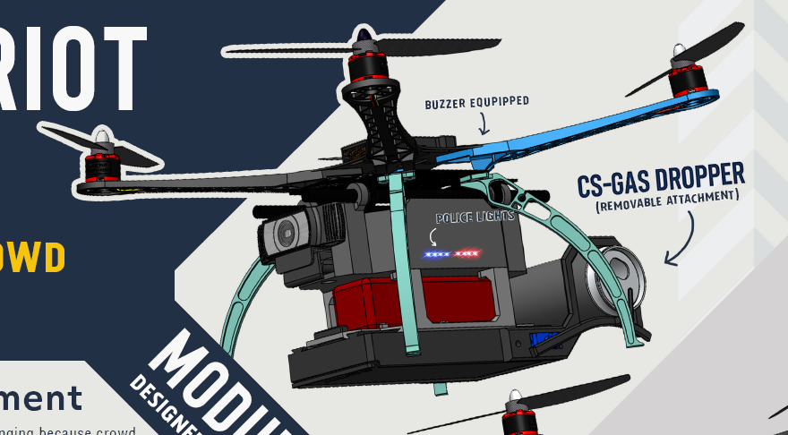
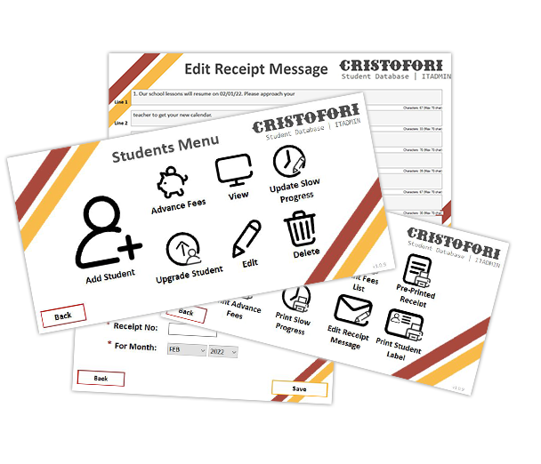
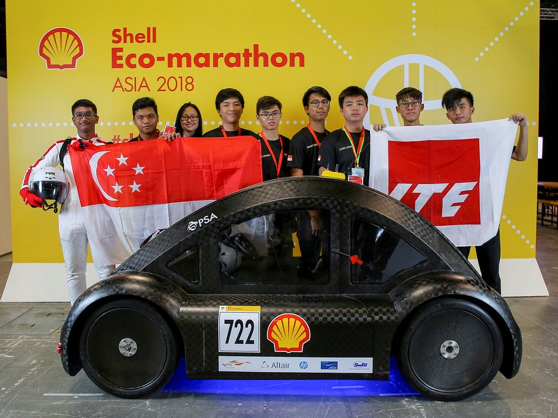
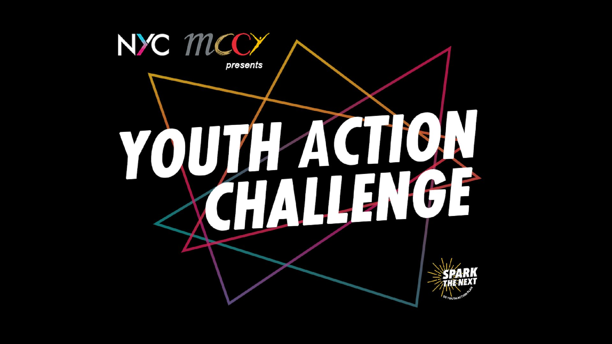
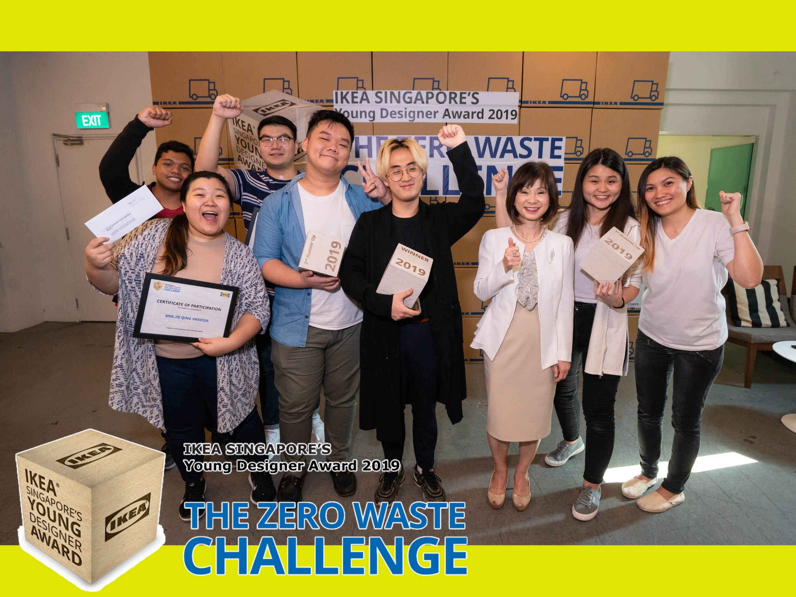
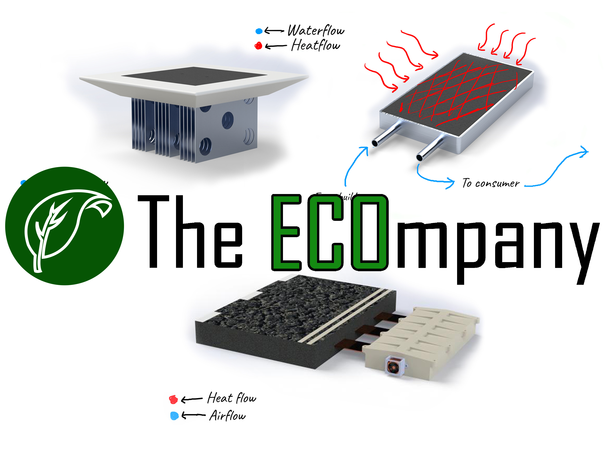
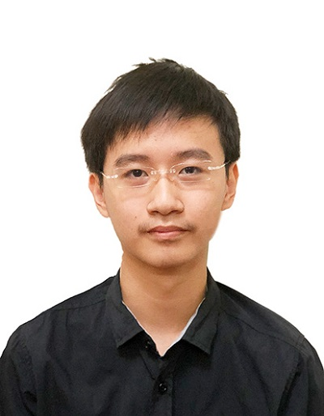
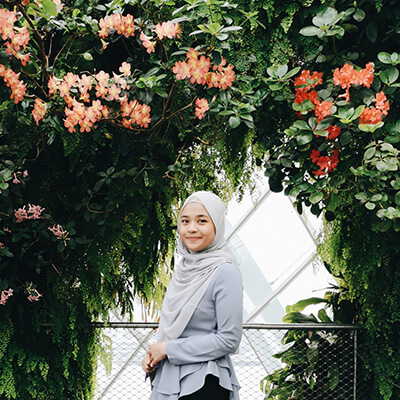
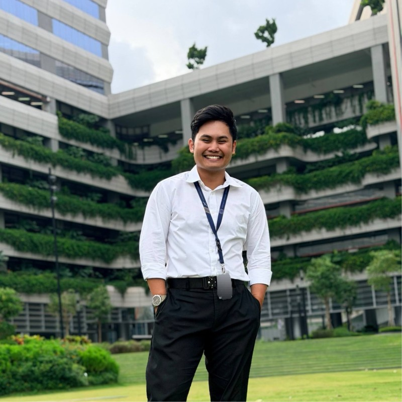

About
About Me
More information:
- Age:
- Email: mohdasyraf999@gmail.com
- Qualifications: H.Nitec w Merit in Mechatronics Engineering
Diploma w Merit in Aerospace Electronics
I am an undergraduate student at the Singapore Institute of Technology (SIT) majoring in Aircraft Systems Engineering, with a strong foundation in robotics, mechatronics, and systems integration. My engineering journey began with a Higher Nitec in Mechatronics Engineering at ITE College West, followed by a Diploma in Aerospace Electronics at Ngee Ann Polytechnic, where I specialised in avionics and embedded systems. I was awarded a Certificate of Merit at both the Higher Nitec and Diploma levels. I have also represented my school and Singapore in competitions such as the Shell Eco-Marathon Asia, Singapore Robotics Games, and Youth Action Challenge. In addition, I work as a Systems & Application Support Developer (Project-Based) at A2G Music Centre, where I develop software solutions to improve operational efficiency.
Accomplishments
A few highlights that reflect my journey in engineering, innovation, and competitions.
Competitions
Engineering & innovation challenges participated
Leadership Roles
Team leadership and project management
Merit Graduations
Higher Nitec & Diploma awarded with Merit
Languages
English & Malay
Technical Skills
Skill Certifications
Certified SOLIDWORKS Associate (CSWA)
3DEXPERIENCE SOLIDWORKS ASSOCIATE - Certificate Issued by Dassault Systèmes
View Credential
WSQ Manage Work at Height
Workplace Safety and Health certification for working safely at elevated locations.
Resume
Download ResumeExperience
Licensed Aircraft Engineer Trainee (B2 Avionics)
SIA Engineering Company (SIAEC)
Jan 2026 – Present
- Avionics (B2) trainee under the Integrated Work Study Programme (IWSP) in an operational Part-145 MRO environment.
- Gaining exposure to aircraft maintenance practices, safety management systems, and aviation regulatory standards.
- Developing foundational knowledge of aircraft avionics systems, maintenance procedures, and engineering documentation.
Systems & Application Support Developer (Project-Based)
Cristofori Music School / A2G Music Centre Pte Ltd
2021, 2023 – Present
- Collaborated with operations teams to design and develop a custom student database management system.
- Built and deployed the application using C#, Windows Forms, and SQL LocalDB.
- Translated operational workflows into practical software solutions used across multiple branches.
- Provide ongoing maintenance, feature improvements, and technical support.
Research Assistant – Water Droplet Generator Prototyping
Singapore Institute of Technology
2025
- Designed and built a droplet generator system for free-fall droplet dispersion experiments.
- Performed 3D modelling and prototyping using SolidWorks and 3D printing.
- Conducted iterative testing and optimisation to achieve a functional working prototype.
Research Assistant – Insole Fabrication & Technical Support
Singapore Institute of Technology
2024
- Supported a research project focused on developing 3D-printed insoles with embedded pressure sensors.
- Performed wiring, soldering, and sensor integration for prototype systems.
- Assisted with experimental data collection and technical support during participant trials.
Singapore Police Force (GRF Officer)
Police National Service (SC/SGT)
2021 – 2023
- Served as a frontline responder to ‘999’ police emergency calls during National Service.
- Conducted patrol duties, handled police reports for members of the public, and supported major public events.
- Received Operational Excellence Awards for outstanding operational performance.
The ECOmpany
2019 – 2021
Founder & President
- Founded a youth initiative focused on sustainability and renewable energy awareness.
- Organised outreach activities promoting environmental innovation.
SOTA Gotong Royong – Sustainability Workshop
2021
Organised under The ECOmpany
- Organised sustainability outreach workshops for students at the School of the Arts (SOTA).
- Designed and conducted a hands-on experiment demonstrating electricity generation using temperature differences.
- Promoted environmental awareness and renewable energy concepts through interactive demonstrations.
Education
Aircraft System Engineering Undergraduate
2023 - Sep 2026 (Expected)
Singapore Institue of Technology
The Bachelor of Engineering with Honours in Aircraft Systems Engineering is a three-year direct honours programme, developed in collaboration with SIA Engineering Company (SIAEC), which provides extensive Maintenance, Repair and Overhaul (MRO) services to more than 80 international airlines and aerospace equipment manufacturers worldwide.
Awards and achievements:
Diploma with merit in Aerospace Electronics
2018 - 2021
Ngee Ann Polytechnic
Awards and achievements:
- Certificate Of Merit
- Graduated with a GPA of 3.77
- Director's List, Level 1, Academic Year 2018/2019
- Best In Module, English Language & Contemporary Issues
- 2nd Most Outstanding Performance in Level 1, Academic Year 2018/2019
- Edusave Certificate Of Academic Achievement 2020
- Edusave Certificate Of Academic Achievement 2019
Higher Nitec with merit In Mechatronics Engineering
2016 - 2018
Institute of Technical Education
Awards and achievements:
- Graduated with a GPA of 3.98
- Director's List, 2016 & 2017
- Certificate Of Merit
- Diamond Service Star 2017
- Student Commendation Award
- Vice President of Robotics Club
- Edusave Award for Achievement, Good Leadership and service (Eagles) 2018
- Model Student, RRRICH Character award 2017
- Best In Module for Pneumatic Logic Controller (PLC)
- Edusave Character award 2017
Projects & Competitions
Anti-Riot Drone – Capstone Project
2025
Singapore Institute of Technology
- Built a modular S500 quadcopter platform using Pixhawk flight controller, Raspberry Pi, Python, SolidWorks, custom circuitry, and 3D-printed components.
- Designed and integrated interchangeable payload modules including LRAD and payload-dropper systems for demonstration purposes.
- Developed custom electronics, 3D-printed mounts, and safety systems to support modular payload integration.
- Presented the project to SIT faculty and representatives from the Ministry of Home Affairs.
Customised Student Database Program
2023 – Present
Cristofori Music School / A2G Music Centre Pte Ltd
Designed and developed a customised student database management system used across multiple branches of Cristofori Music School. The system was built using C#, Windows Forms and SQL LocalDB to streamline administrative workflows such as student record tracking, class management and operational reporting. The application continues to be maintained and expanded to support the daily operations of the music school.
Youth Action Challenge 2020 (EcoRoad)
2019 – 2020
Ngee Ann Polytechnic / The ECOmpany
Led a project team called EcoRoad to explore methods of generating electricity using heat from roads, rooftops and seawater. The team was awarded the Most Innovative Award, received a S$30,000 development grant, and was selected as one of the Top 12 finalists. The project was featured on mewatch.sg and in national media outlets.
IKEA Young Designers Award
2019
Ngee Ann Polytechnic
Participated in IKEA Singapore’s Zero Waste design challenge focusing on sustainable product innovation. As the team leader, I guided the project from concept development to final presentation.
- Merit Award winner
- Top 5 out of 132 teams
- People’s Choice Award
Aviation Safety Competition
2019
Ngee Ann Polytechnic
Represented Ngee Ann Polytechnic in the Aviation Safety Competition organised by the Singapore Institute of Aerospace Engineers (SIAE). The competition promotes aviation safety awareness and encourages students to explore careers in the aerospace industry.
Shell Eco-marathon Asia 2018
2017 – 2018
Institute of Technical Education (ITE)
Served as the Team Manager for the ITE team competing in Shell Eco-marathon Asia. The competition challenges students to design and build highly energy-efficient vehicles.
- Top 10 in the Urban Concept Battery Electric category
- Best performing team among Singaporean institutions
Shell Eco-marathon Asia 2017
2016 – 2017
Institute of Technical Education (ITE)
Participated in the Electrical Team responsible for the vehicle’s electrical and control systems. The team represented both ITE and Singapore in one of the world’s leading energy-efficiency engineering competitions.
Singapore Robotics Games (RC Sumo)
2018
Institute of Technical Education (ITE)
Competed in the RC Sumo robot competition held at Science Centre Singapore. The event involved designing and operating robots capable of pushing opponents out of the arena.
Tan Kah Kee Young Inventors’ Award
2018
Institute of Technical Education (ITE)
Participated in a national innovation competition encouraging students to develop original inventions and technological solutions with potential societal impact.
Lee Kuan Yew Technological Award
2016 – 2017
Institute of Technical Education (ITE)
Selected as a finalist representing ITE College West in a competition recognising technical innovation and engineering creativity among ITE students.
- Mechanical Lead for the project team
Singapore Junior Water Prize
2017
Institute of Technical Education (ITE)
Participated in the national environmental research competition focused on water sustainability and environmental innovation among students.
Energy Innovation Challenge
2017
Institute of Technical Education (ITE)
Developed an engineering concept called “Roadmaster” aimed at reducing heat build-up on road surfaces to mitigate the Urban Heat Island Effect.
- 1st Place – ITE/Polytechnic category
- Featured in Berita Harian and The Straits Times
Singapore Amazing Machine Competition
2016
Institute of Technical Education (ITE)
Participated in the engineering design challenge jointly organised by DSO National Laboratories and Science Centre Singapore.
Portfolio
Selected engineering projects, competition work, and public-facing achievements.
- All
- Projects
- Achievements
- Media

PROJECTAnti-Riot Drone
Final-year capstone project featuring a modular drone platform, payload integration, custom electronics, and rapid prototyping.

PROJECTCristofori Student Database
Custom student progress database built in C#, Windows Forms, and SQL LocalDB to support reporting and daily branch operations.

PROJECTElectroLiTE | Shell Eco-marathon 2017 & 2018
ITE Shell Eco-marathon project where I contributed to the vehicle’s electrical and control systems in 2017, and later served as Team Manager in 2018.

PROJECTYouth Action Challenge 2020 | EcoRoad
Sustainability project under The ECOmpany focused on generating electricity from heat, recognised with the Most Innovative Award and development grant support.

ACHIEVEMENTIKEA Zero Waste Challenge
Recognition from IKEA Singapore’s design challenge, where our team placed among the top entries for sustainable innovation.

PROJECTThe ECOmpany
Project website showcasing The ECOmpany’s sustainability initiatives, outreach work, and innovation projects.
Creative Media
Selected video work directed and edited by me across course, external, academic, and personal projects.
 COURSE VIDEO
COURSE VIDEO
Aircraft Systems Engineering Course Promotional Video
Director & Editor
Promotional video produced for the Aircraft Systems Engineering course.
Watch Video MODULE VIDEO
MODULE VIDEO
How Does a Paper Plane Fly?
Director & Editor
Produced as part of an SIT module to explain the principles behind paper plane flight.
Watch Video MODULE VIDEO
MODULE VIDEO
Math Video 1: Differentiation
Co-Director & Editor
Produced as part of an SIT module to explain the concept of differentiation.
Watch Video MODULE VIDEO
MODULE VIDEO
Math Video 2: Double Integration
Co-Director & Editor
Produced as part of an SIT module to explain the concept of double integration.
Watch Video MODULE VIDEO
MODULE VIDEO
Don't Let the Alien Die
Director & Editor
Produced as part of an SIT Innovation module to showcase a physical game developed by the team, together with its game manual.
 EXTERNAL VIDEO
EXTERNAL VIDEO
EcoTile
Director & Editor
Promotional video by The ECOmpany, directed and edited by me as part of the Youth Action Challenge and my poly FYP to explain what EcoTile is and what it does.
Watch Video EXTERNAL VIDEO
EXTERNAL VIDEO
EcoRoad
Director & Editor
Promotional video by The ECOmpany, directed and edited by me as part of the Youth Action Challenge and my poly FYP to explain what EcoRoad does.
Watch Video MODULE VIDEO
MODULE VIDEO
Readease
Director & Editor
Produced as part of an SIT module to present a social innovation project concept.
Watch Video SHORT FILM
SHORT FILM
Peninggalan
Co-Director & Editor
A short horror film made for fun with my cousins in Malaysia, which I co-directed and edited.
Watch FilmTestimonials
I met Asyraf during my time working at A2G Music Centre, as one of the developers under my team. He always came up with new ideas and constantly strived for perfection in all that he does. He is also not afraid to question and suggest various ways to improve processes that were already put in place. In summary, Asyraf is a very hard working individual who strives to do the best in all that he does.

Nathan Wei Jie Wong
IT Administrator | Project Manager
I have worked together with Asyraf in several projects and I have found him to be an amazing and efficient team player. He comes up with great ideas and is very ambitious yet realistic. I would love to work together with Asyraf again in future

Syafiqah Zailani
Digital Learning Designer
Meeting at ITE College West, Asyraf and I embarked on a collaborative journey marked by innovative projects. His adept leadership and seamless teamwork impressed in diverse ventures. As a friend, he subtly inspired me to exceed limits through actions, rather than just words. Across seven enriching years, our bond is a regret-free choice.
Muhd Rusydi Bin Sabtu
IT Administrator | Developer
I have worked with Asyraf on multiple projects such as the Energy Innovation Challenge 2017 and the Shell Eco Marathon 2018. He is an innovative individual that thrives on challenges and I enjoyed working with him on all the projects that i was tasked to do.
Izzat Bin Mahad
Undergraduate at NTU
Throughout our time in SIT, Asyraf consistently showed strong engineering systems and electronics knowledge, especially in prototyping work. He always aimed to go beyond requirements and deliver more than what was expected. He is highly hands-on, innovative, and a dependable team player who helps others, thinks critically, and contributes meaningfully in group settings. I believe his engineering mindset, creativity, and people skills make him a valuable asset to any company.
